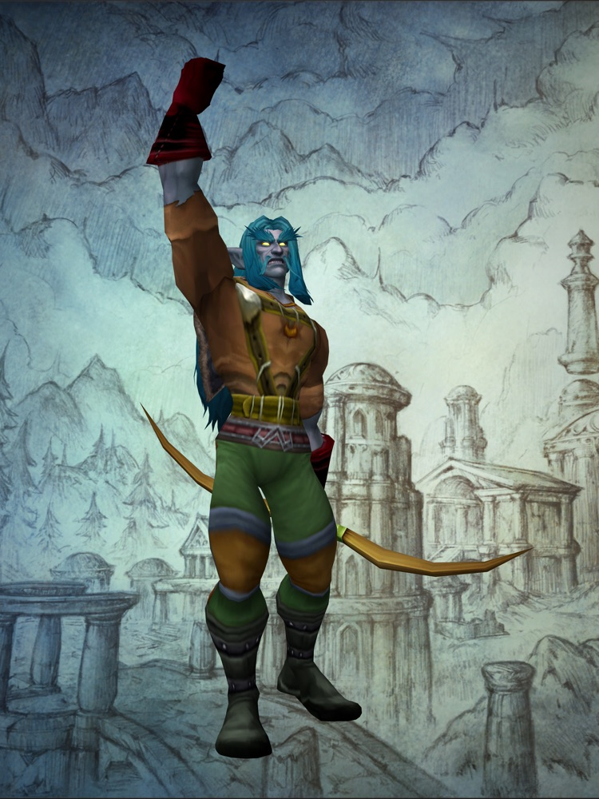

WoW Forever podcasts
The podcasts covering World of Warcraft: Forever, and the most recent episodes worth your time: Warcraft shows, gaming shows and anything else we find.
Twenty-two episodes on twelve shows since BlizzCon. Most seem to agree Forever is slower and harder than people expected, and they argue about whether it's still Classic, whether you should pay for the new race, and whether playing the beta spoils launch. Almost nobody outside gaming is talking about it yet. Read what the shows are saying →
Recent episodes about Forever
Newest first. Last checked October 6, 2026. Each title links to the episode, or to the show's feed where the episode has no page of its own. We only list episodes we found on a live page.
- Warcraft showsCan't Buy Me GoldCountdown To Classic · Josh Corbett and crew · around October 5, 2026 · 3 h 22 min
The week's beta stories, and the crew's reaction to Blizzard's class-design episode of the official podcast, which Josh also hosts.
Why listen: Hear the official podcast's host talk about it off the official record.
- Warcraft showsEp. 54: The Future of Warcraft: Forever Is Getting WildAzeroth Morning Radio · Jibbs and Kash · around October 5, 2026 · 1 h 18 min
Blizzard keeps adding beta capacity, bots in a brand-new economy, hints of a console version, and Blizzard's survey asking players about eleven possible new classes.
Why listen: The most current casual-player view, and the place to hear the console and new-class talk.
- Warcraft showsEpisode 2: Speed Running Classes ft. SodapoppinWorld of Warcraft: Forever, the official podcast · Countdown To Classic with Sodapoppin and Blizzard designers Josh Greenfield, Aidan Moon and Kris Zierhut · October 1, 2026 · 1 h 18 min
Blizzard's designers explain the thinking behind Forever's class changes.
Why listen: The design reasoning straight from the people who made it. The forum reaction split hard, from praise to calls of 'simple and stupid'.
Also on Warcraft Tavern write-up - Warcraft showsEp. 53: Is Warcraft: Forever Changing the Future of World of Warcraft?Azeroth Morning Radio · Jibbs and Kash · September 29, 2026
Whether Forever's dangerous, slower open world will pull modern WoW in the same direction.
Why listen: The big-picture question: what Forever means for the rest of WoW.
- Warcraft showsThe Dulltimate WarriorCountdown To Classic · Josh Corbett, with Marrow · September 28, 2026 · 3 h 45 min
Week-one beta impressions, then a long argument that the warrior, rage and all, feels dull.
Why listen: The fullest version of the 'did the class changes go too far, or not far enough' debate.
- Warcraft shows#600: The episode where Cory says I told you soBlizzard Watch Podcast · Liz Harper and Joe, with Cory, Liz Patt and Mitch · September 25, 2026 · 1 h 08 min
Recorded live while Liz played the beta. The crew argue whether playing the beta wears the shine off launch day: Liz says it does, Joe doesn't mind.
Why listen: A question worth asking when beta access comes with a paid pack.
- Warcraft showsEpisode 1: Unpacking Beta Launch ft. XaryuWorld of Warcraft: Forever, the official podcast · Countdown To Classic with Josh Greenfield, lead classic designer Tim Jones and Xaryu · September 24, 2026 · 1 h 02 min
Blizzard's own beta data: levels 1 to 20 are slower than in Classic Era, some early blue quest rewards are being pulled back to keep the white, green, blue climb, and layering bugs are still being fixed.
Why listen: The first time Blizzard put beta numbers on the record.
Also on Blizzard's post - Warcraft showsEp. 155: WoW Forever: The Good, The Bad & The UglyAzeroth United · Denethar · September 23, 2026 · 1 h 38 min
A structured run through levelling, quests, dungeons, talents, professions, graphics, the realmless servers, class changes and the money side, ending on 'does WoW Forever still feel like Classic?'
Why listen: The tidiest pros-and-cons episode, and it asks the authenticity question outright.
Also on Spotify - Warcraft showsThe never-ending faction war in World of Warcraft: ForeverLore Watch (Blizzard Watch) · Joe, Matt and Eric · September 23, 2026
Alliance against Horde in Forever's story, and whether the Skyborne have enough lore behind them to earn a place.
Why listen: The lore side of the new-race argument.
- Warcraft shows#754: Warcraft Forever..Beta!The Starting Zone · Spencer Downey and Jason Lucas · September 22, 2026 · 2 h 12 min
Forever's BlizzCon panels and the opening of the beta.
Why listen: An 18-year-old show for modern WoW players: Forever as seen from outside the Classic crowd.
- Gaming showsEp. 580: A Loftia set of goalsMassively OP Podcast · Justin Olivetti and Chris · September 22, 2026 · 1 h 07 min
The Forever beta launch, set among the rest of the week's MMO news.
Why listen: How the wider MMO world sees it.
- Warcraft showsEp. 52: BlizzCon 2026 Changed Warcraft ForeverAzeroth Morning Radio · Jibbs and Kash · September 22, 2026
A BlizzCon recap with hands-on Forever impressions, recorded for the show's first birthday.
Why listen: Fresh first impressions from people who played it at the show.
- Warcraft showsWoW Forever Beta: Our Honest First ImpressionsWarcraft Brew · Quissy and Pastaface · September 21, 2026 · 1 h 39 min
The reveal and the beta: the Skyborne, quests, dungeons, professions, class changes, character models, layering, gear and shared mob tagging.
Why listen: Their summer episodes surveyed fans on what Classic+ should be, so you can hear the wish list and the reality side by side.
- Warcraft showsThe BlizzCon mega episodeBlizzard Watch Podcast · Anna Bell and the Blizzard Watch crew · September 18, 2026 · 2 h 01 min
About an hour on Forever, which they call 'the new Classic+ that was rumored and is now coming to fruition with a sort-of alternate history.'
Why listen: The longest single stretch of Forever talk from a Blizzard-focused outlet.
- Warcraft shows#84: Looks Like We Are Playing FOREVER! The Big BlizzCon DebriefA WoW Podcast, Obviously · Taliesin and Evitel · September 18, 2026
A BlizzCon debrief: Forever alongside the news for modern WoW.
Why listen: They called Classic+ from the BlizzCon schedule two weeks earlier.
- Gaming showsEp. 70: World of Warcraft ForeverParty Chat · Mic Drop Studios · September 18, 2026 · 53 min
A general chat show giving an episode to Forever. Marked explicit.
Why listen: A loose, non-specialist take.
- Warcraft shows#753: Returned from BlizzCon!The Starting Zone · Spencer Downey and Jason Lucas · September 16, 2026 · 2 h 13 min
The hosts back from BlizzCon in person, going through the announcements.
Why listen: What the room felt like when Forever was announced.
- Warcraft showsClassholesCountdown To Classic · Josh Corbett and crew · September 16, 2026 · 4 h 07 min
Every class, spec by spec, just before the beta opened.
Why listen: A reference to come back to once you've picked a class.
- Gaming shows958: Eye PushupsGiant Bombcast · Giant Bomb crew · September 15, 2026 · 2 h 42 min
Mikey reports back from BlizzCon, about 1:42:06 in: StarCraft is a shooter, Diablo V is coming, and WoW goes Forever.
Why listen: The one general gaming show we could confirm talking about Forever.
- Warcraft showsDon't Forget, You're Here ForeverCountdown To Classic · Josh Corbett and crew · September 15, 2026 · about 4 h
BlizzCon impressions of the announcement and a first look at the new talent trees.
Why listen: The first long reaction from the biggest Classic show.
Also on Spotify - Gaming showsEp. 579: BlizzCon BreakdownMassively OP Podcast · Justin Olivetti and Chris · September 14, 2026 · 1 h 09 min
All BlizzCon, with Forever as 'the official Classic Plus offering'.
Why listen: The MMO press's first read.
- Warcraft showsWhat is Warcraft Forever?Azeroth Morning Radio · Jibbs and Kash · September 8, 2026 · 1 h 15 min
Recorded before the reveal: what Project Camelot and 'Warcraft Forever' might turn out to be.
Why listen: A time capsule. Compare what fans expected with what Blizzard announced four days later.
Also on Spotify
Warcraft shows
- World of Warcraft: Forever, the official podcastCountdown To Classic, with Blizzard developers and streamer guests · new in September 2026
Blizzard's own show: designers explain the beta and their decisions.
- Countdown To ClassicJosh Corbett and crew · weekly
Classic and now Forever, in very long episodes. Running since 2018.
- Blizzard Watch Podcast and Lore WatchLiz Harper, Joe, Matt, Cory and others · weekly
Every Blizzard game, plus a separate lore show.
- The Starting ZoneSpencer Downey and Jason Lucas · weekly
Modern WoW and the community, live on Tuesdays.
- Azeroth Morning RadioJibbs and Kash · weekly, Mondays
WoW and Forever from a casual player's chair.
- Warcraft Brew (WoW Forever + Classic)Quissy and Pastaface · every two to three weeks
Classic+ and Forever, with fan surveys.
- Azeroth UnitedDenethar · weekly
Modern and Classic WoW, and lore.
- A WoW Podcast, ObviouslyTaliesin and Evitel · about every two weeks
WoW news and commentary.
Gaming shows
- Massively OP PodcastJustin Olivetti, with Bree or Chris · weekly
The whole MMO genre, every week since 2015.
- Giant Bombcastthe Giant Bomb crew · weekly
General gaming. Forever comes up when the news is big enough.
Tell us on Instagram at @wowforeverguide or on X at @cowboykaizen. We add a show once we've found an episode about Forever and listened to it.
